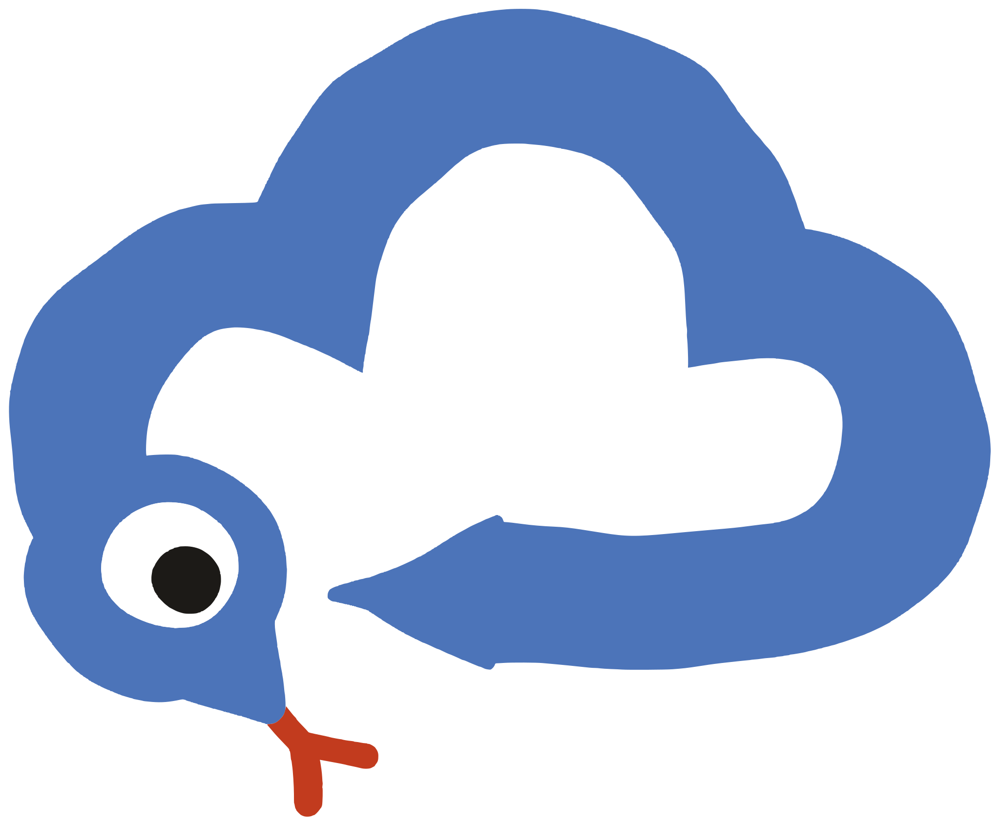

文字 · 细密
云曼巴
frequency 0.09 · scale 3.5
中文粗宋体、英文 slab 与品牌短标签。
 DESIGN LANGUAGE / 1.1
DESIGN LANGUAGE / 1.1以模块化智能体连接业务流程，逐步构建企业知识图谱，让 AI 进入经营与决策。


原稿的文字、图案、粗线与色块都保留不规则实色边缘。不是给整张画面加噪点，也不是用倾斜和投影制造手作感。
frequency 0.09 · scale 3.5
中文粗宋体、英文 slab 与品牌短标签。
frequency 0.035 · scale 5
圆形、角色、色块、窗口外壳与粗线。
底色和文字各用一层滤镜。
正文、数据和真实控件保持清晰。
奶油底与墨黑文字建立秩序；蓝黄红形成主画面。粉、绿、梅红用于角色和局部点缀。
#F3ECDF#1C1A17#4C74B9#F1C543#C23B1E#EFA3B3#3E9A5E全部13种颜色见 tokens.json；辅助文字与表格用中性色，不用每种品牌色各做一张卡片。
Noto Serif SC · 900 · roughtext
从一个业务环节
连接全链路
正文仍使用无衬线，不加滤镜。粗宋体的笔画结构和衬线转角需要清楚保留。
Alfa Slab One · roughtext
AI SOFTWARE
AS FAST AS
A MAMBA
本页使用包内官方原始字体，可离线渲染。请等待字体加载完成再截图或导出。
标志毛边已转路径，角色内嵌原滤镜。直接复用，不叠加第二遍毛边。


站立 · 粗面条身体 · 几何蛇头

盘绕 · 白眼黑瞳 · 红色分叉舌头

游动 · 头身撞色 · 实色毛边
产品工作台保留配色、字重与局部硬阴影；正文、状态和操作区不使用毛边。下方为合成示例，不代表已上线能力。
清楚表达任务、依据和人工接管状态。